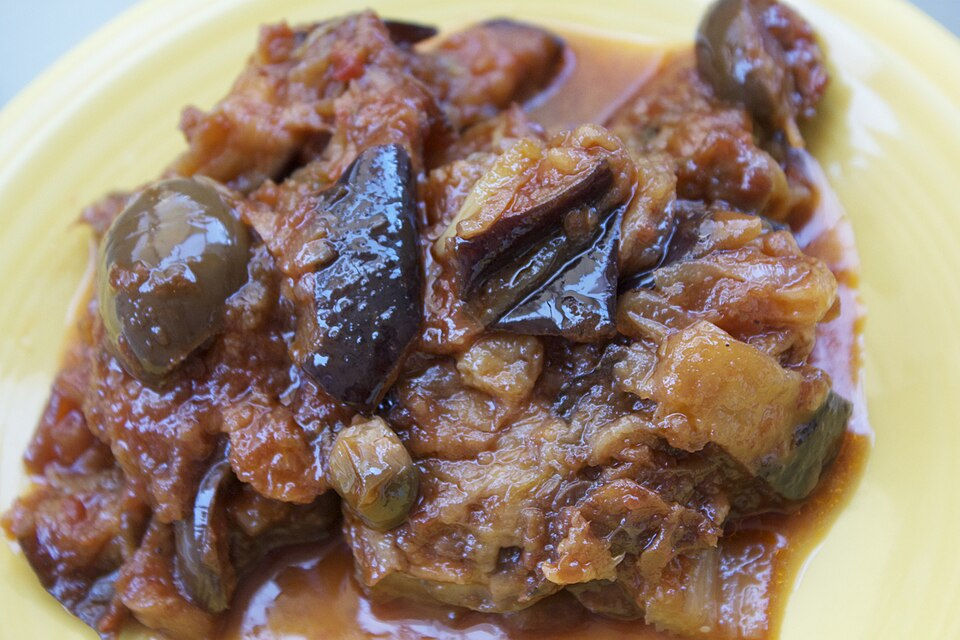

Published August 14, 2023
Sicilian Eggplant Caponata
Sweet and sour aubergine, better on day three
- Eggplant
- Side Dish
- Italian (Sicilian)
- make ahead
- vegan
- serves a crowd
Fried eggplant folded into a sweet-and-sour agrodolce of celery, onion, olives and capers. Caponata is a pantry dish that tastes best after a night in the refrigerator.

Photo: Massimoweb · CC BY-SA 3.0 · via Wikimedia Commons · all image credits
Ingredients
- 2 1/2 pounds (1.1 kg) heirloom eggplant, cut into 1-inch cubes
- 1 tablespoon kosher salt
- 1/2 cup olive oil, plus more as needed
- 1 large onion, thinly sliced
- 4 celery ribs, cut crosswise into 1/2-inch pieces
- 2 garlic cloves, minced
- 1 cup crushed tomatoes or passata
- 3/4 cup green olives, pitted and halved
- 1/4 cup capers, rinsed
- 1/3 cup red wine vinegar
- 2 tablespoons sugar
- 1/2 teaspoon red pepper flakes
- 1/2 cup toasted pine nuts or slivered almonds
- 1/4 cup golden raisins (optional)
- 1/4 cup chopped flat-leaf parsley, plus more to serve
- Freshly ground black pepper
Equipment
- Large heavy skillet or saute pan
- Slotted spoon
- Sheet pan lined with paper towels
- Large non-reactive bowl
Why this recipe works
Caponata is Sicily's pantry masterpiece: aubergine browned in oil, then dressed with vinegar, sugar, olives and capers and left to cool. It keeps for a week, which is why it appears on every Sicilian table as an antipasto, a side for grilled fish, and a midnight snack on bread.
The vinegar and sugar are the whole point. That agrodolce balance preserves the dish, sharpens the reheated flavours, and makes eggplant, a vegetable that can taste flat, suddenly assertive.
Heirloom varieties to look for
Look for small, dense eggplant: Listada de Gandia, Rosa Bianca, or the long Japanese varieties such as Millionaire and Black Beauty. Small fruit are less seedy, which matters because the seeds turn bitter in hot oil.
Method
Salt and drain the eggplant
Toss the cubes with the kosher salt in a colander and let them stand for 30 minutes. Press gently with paper towels to remove the beaded moisture, then dry thoroughly; this is the step that prevents oil-soaked eggplant.
Brown the eggplant
Heat 1/4 cup of the olive oil in the skillet over medium-high heat. Fry the eggplant in three batches, adding oil as needed, for 5 to 6 minutes per batch until each cube is golden on at least two sides. Lift each batch out with a slotted spoon to the lined sheet pan.
Cook the celery and onion
Pour off all but 2 tablespoons of oil. Add the onion and celery and cook over medium heat for 8 to 10 minutes until the celery is tender but still has a bite. Add the garlic and cook 1 minute more.
Make the agrodolce
Stir in the crushed tomatoes, vinegar, sugar and red pepper flakes. Simmer for 5 minutes until the sauce thickens and smells sweet and sharp at the same time.
Fold everything together
Return the eggplant to the pan with the olives, capers, pine nuts and raisins if using. Simmer gently for 8 minutes, stirring carefully with a wooden spoon so the cubes keep their shape.
Cool and rest
Off the heat, stir in the parsley and a few grinds of black pepper. Transfer to the bowl and cool to room temperature, then cover and refrigerate at least 4 hours, preferably overnight.
Serve
Bring to cool room temperature before serving. Spoon onto crostini, alongside grilled fish, or into a bowl with bread. Finish with a thread of good olive oil and more parsley.
Cook's notes
- Salting the eggplant is not optional here; unsalted eggplant drinks oil and turns to mush.
- Use a non-reactive bowl and pan. Aluminium reacts with the vinegar and leaves a metallic edge.
- Keep the simmer gentle. A hard boil breaks the cubes down into a dip rather than a salad.
Variations
- Add 1 cup of chopped roasted red peppers for a brighter, sweeter caponata.
- Add 2 tablespoons of unsweetened cocoa powder with the tomatoes for a 19th-century Sicilian touch.
- Skip the frying and roast the eggplant at 425 F for 25 minutes on a sheet pan for a lighter version.
Storage
Refrigerate in a glass container for up to 1 week, or freeze for 3 months. It genuinely improves after 24 hours. Serve at room temperature for the fullest flavour.
How to serve it
About 3/4 cup per serving. Serve it within the time noted above for the best texture, because heirloom produce is far less forgiving than supermarket vegetables.